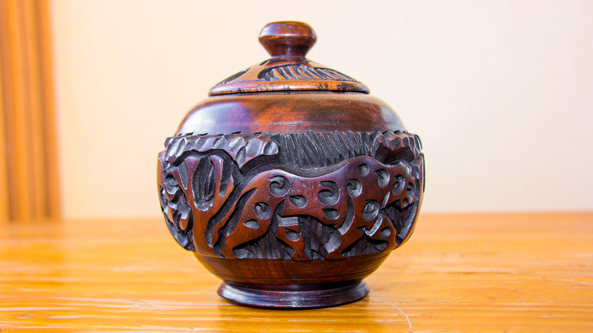
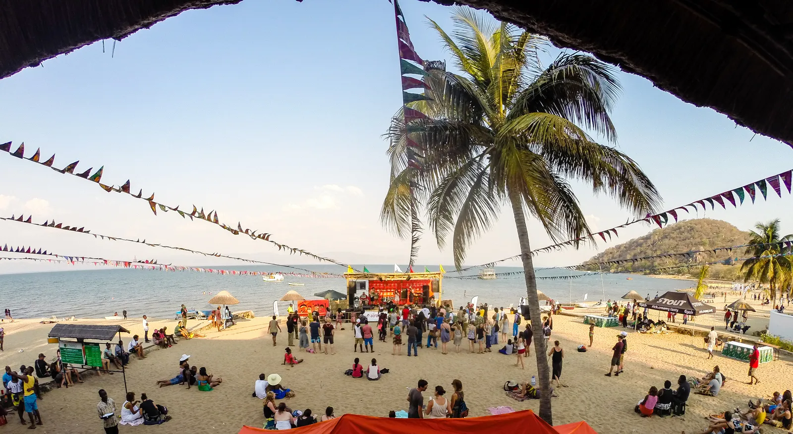

Local Tribes and Communities
Lake Malawi is surrounded by diverse tribes such as the Chewa, Yao, Tonga, and Nyanja, each with unique traditions
and ways of life.
Fishing villages along the shores reflect centuries-old practices, with wooden canoes, nets, and communal living.
The lake is more than a resource — it is the heart of community life.

Traditional Music and Dance
Music is deeply rooted in the culture, with drums, mbira (thumb piano), and local songs
played during celebrations and ceremonies. Dances such as the Gule Wamkulu (Great Dance of the Chewa people)
are performed with masks and costumes, representing ancestral spirits and storytelling through movement.

Crafts and Local Art
The lakeside communities are known for their wood carvings, woven mats, pottery, and beadwork.
These crafts are both practical and artistic, often passed down through generations.
Tourists often buy souvenirs from local markets, helping support the artisans who preserve these traditions.

Festivals and Heritage
Events like the Lake of Stars Festival combine music, art, and cultural exchange, attracting both locals
and international visitors. Beyond modern festivals, traditional ceremonies and rituals highlight the lake’s
spiritual and historical significance.
Together, they keep Lake Malawi’s culture vibrant and alive./p>